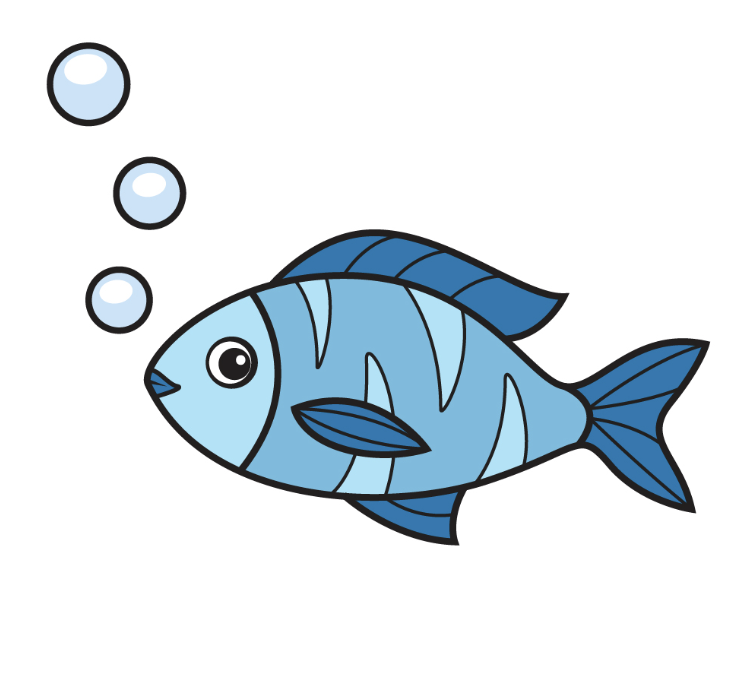

<main class="bg-slate-300 min-h-screen flex justify-center items-start py-16">
  <div class="border border-black container bg-white w-10/12 p-8 h-auto rounded-lg">
    
    <div class="flex justify-center w-full mb-4">
      
      <h1 class="text-2xl">Status of Fish Tank</h1>
    </div>
    
      <div class="statuses"> 
        <div class="flex justify-between">
          <div>
      <div class="flex gap-16 items-center  pb-4">
        <h2>Last Feeding Time:</h2>
        <h2>{{ lastTimeFed }}</h2>
      </div>

      <div class="flex gap-16 items-center  pb-4">
        <h2>Number of Feedings:</h2>
        <h2>{{ amount }}</h2>
      </div>
    </div>
      
    </div>
      <div class="flex gap-2 items-center pb-4">
        <button
          (click)="feedFish()"
          type="button"
          class="focus:outline-none text-white bg-green-700 hover:bg-green-800 focus:ring-4 focus:ring-green-300 font-medium rounded-lg text-sm px-5 py-2.5 me-2 mb-2 dark:bg-green-600 dark:hover:bg-green-700 dark:focus:ring-green-800 border border-black"
        >
          Feed Fish
        </button>
        <button
          (click)="resetAmount()"
          type="button"
          class="text-white bg-blue-700 hover:bg-blue-800 focus:ring-4 focus:ring-blue-300 font-medium rounded-lg text-sm px-5 py-2.5 me-2 mb-2 dark:bg-blue-600 dark:hover:bg-blue-700 focus:outline-none dark:focus:ring-blue-800 border border-black"
        >
          Reset Amount
        </button>
      </div>
    </div>
  </div>
</main>
<router-outlet />
